Where ancient Austronesian traditions meet vibrant festivals — Caraga's cultural tapestry spans over 1,700 years of living heritage, celebrated by five proud indigenous peoples.
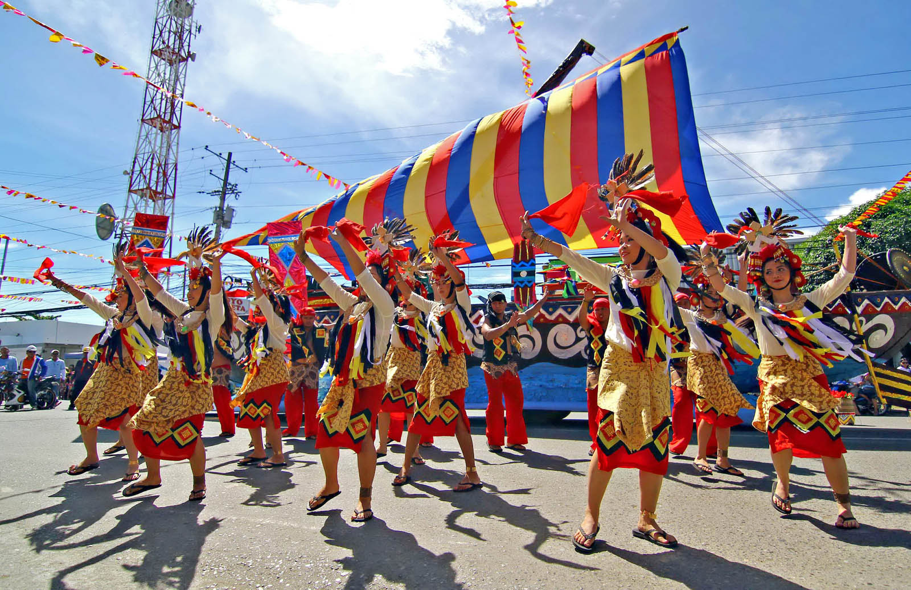
Butuan City's grandest annual celebration honours the ancient Balanghai boats — among the oldest watercraft ever discovered in Southeast Asia. The festival is a spectacular week-long tribute to the city's extraordinary pre-colonial seafaring heritage, declared a National Cultural Treasure in the 1970s.
The centrepiece is a magnificent fluvial procession along the Agusan River, where ornately decorated bancas and replica Balanghai boats carry performers in traditional Butuanon attire. Street dancing competitions, tribal showcases, and a cultural trade fair fill the city with energy, colour, and music for an entire week in August.
From fluvial river parades to international surf competitions — Caraga's festivals celebrate every dimension of the region's identity.
Butuan City's grandest celebration honours the ancient Balanghai boats — a National Cultural Treasure. Featuring a fluvial procession on the Agusan River, vibrant street dancing, and tribal cultural showcases.
Learn More →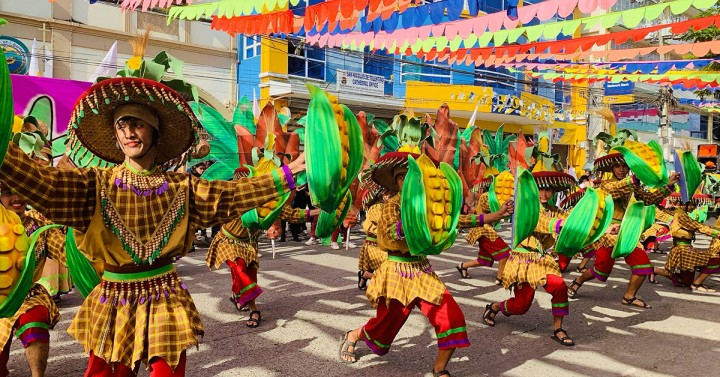
September Surigao del NorteSurigao City's beloved maritime festival — a spectacular fluvial procession, colourful street dancing, and cultural performances celebrating the city's deep connection to the sea and its proud Surigaonon identity.
Learn More →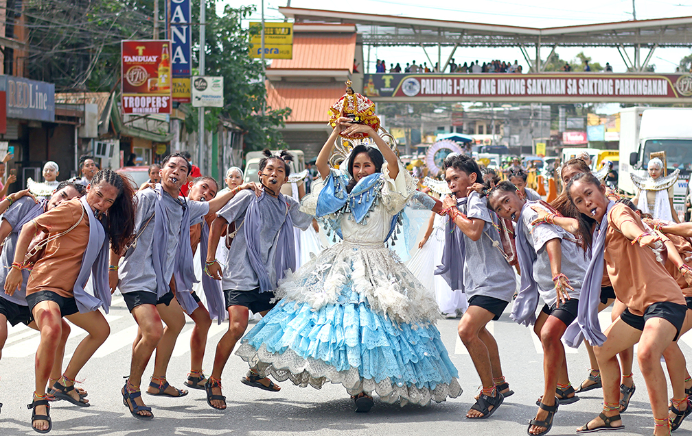
October Agusan del NorteA deeply religious fiesta in Butuan City honouring the Virgen de los Remedios. Colourful religious processions, traditional Butuanon dances, cultural shows, and a week-long celebration of faith and community pride.
Learn More →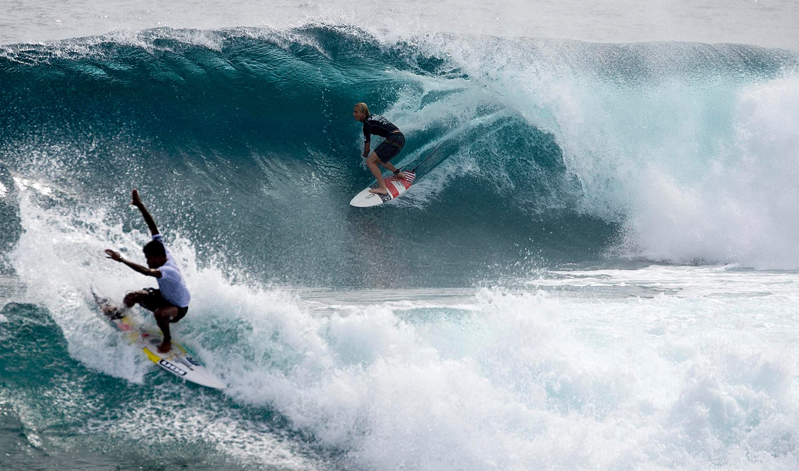
September Surigao del NorteOne of Asia's most prestigious annual surfing events at the legendary Cloud 9 break on Siargao Island. International competitors ride the powerful barrelling waves in front of thousands of spectators from around the world.
Learn More →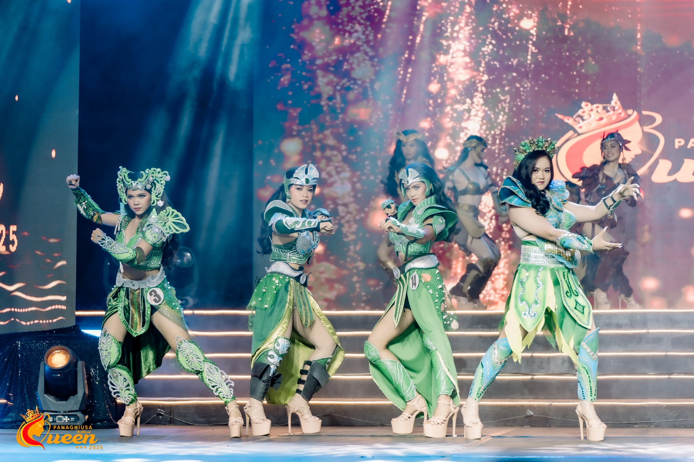
June Agusan del SurAn environmental festival celebrating Caraga's extraordinary natural heritage. Activities include mass tree planting, river clean-ups, eco-tours into the Agusan Marsh, and indigenous Manobo cultural showcases and traditional rituals.
Learn More →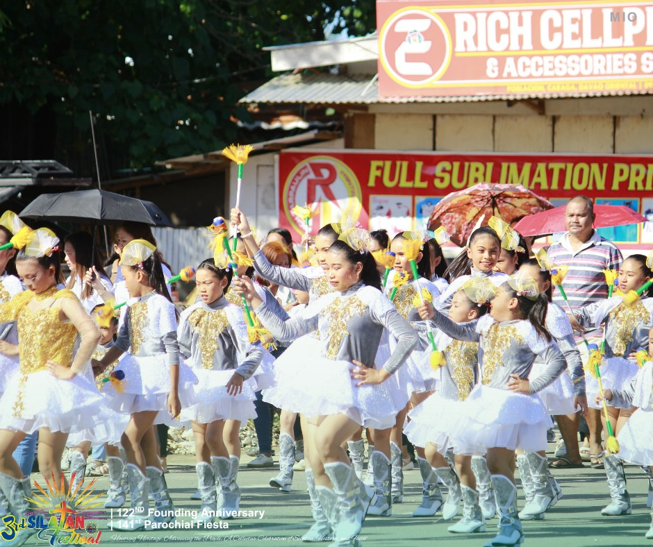
December Region-wideA region-wide celebration bringing all five provinces together in December. Trade fairs, cultural performances, indigenous craft markets, agri-fishery expos, and food festivals showcase the very best of what Caraga has to offer.
Learn More →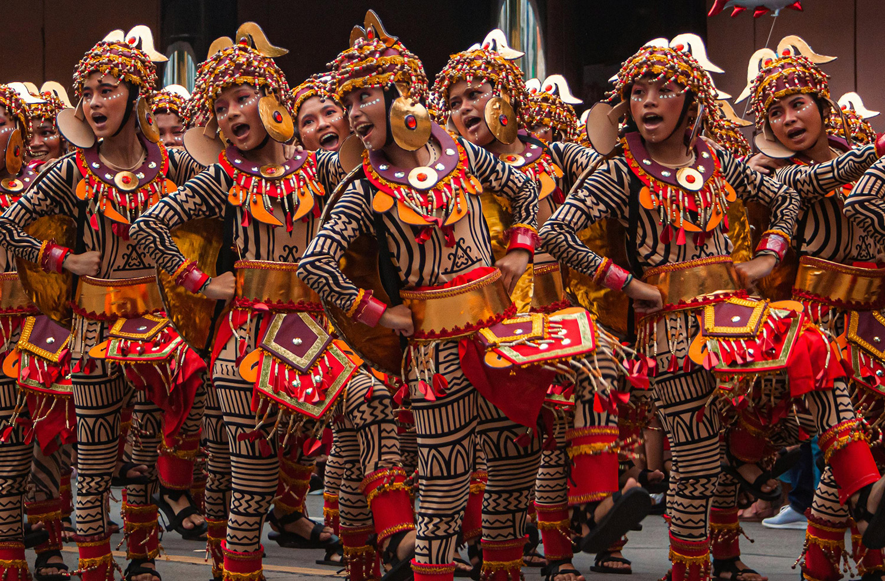
January Agusan del NorteButuan's version of the beloved Sinulog celebration in honour of the Santo Niño. Street dancers in elaborate costumes perform the two-step forward, one-step back dance movement, accompanied by drums and flutes through the city's streets.
Learn More →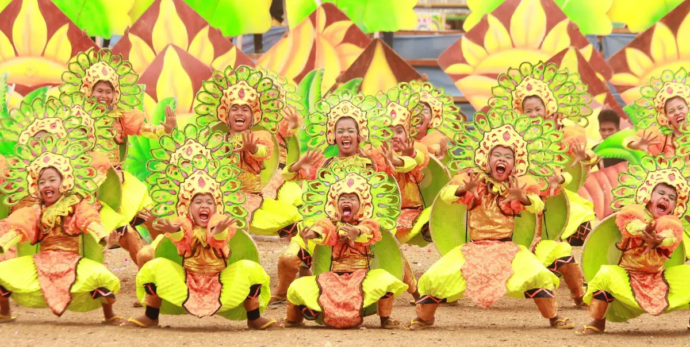
March Surigao del NorteThe annual founding anniversary celebration of Surigao City. The week-long festivities include a trade fair along the baywalk, pageants, sports competitions, cultural presentations, and concerts honouring the city's history and people.
Learn More →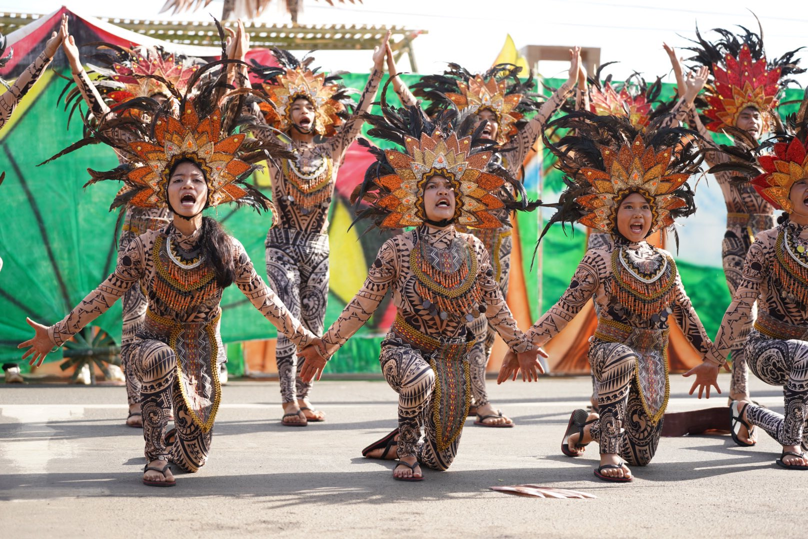
April Surigao del SurThe Banog (Philippine Eagle kite) Festival of Bislig City celebrates the region's biodiversity and the majestic wildlife of the Bislig rainforest. Giant hand-crafted kites, eco-tours into Manga Forest, and indigenous Mandaya cultural presentations.
Learn More →Every month brings something to celebrate in Caraga. Use this guide to plan your trip around the region's biggest events.
Five distinct indigenous peoples call Caraga home. Their languages, traditions, and deep ecological knowledge continue to shape the region's cultural identity.
The Manobo people are the most widely distributed indigenous group in Caraga. They inhabit the highlands and riverine areas of Agusan del Sur, living on floating houses along the Agusan Marsh. Known for their intricate beadwork, traditional clothing, and the sacred rituals of the baylan (spiritual healer), the Manobo maintain a profound relationship with the marsh that sustains their way of life.
Agusan del SurThe Mamanwa — often referred to as the original inhabitants of Mindanao — are considered one of the oldest surviving ethnic groups in Southeast Asia. A Negrito people, they inhabit the mountainous areas of Agusan del Norte and Surigao del Norte. The Mamanwa are renowned for their intricate weaving, forest knowledge, and honey-gathering traditions using the towering dipterocarp trees.
Agusan del Norte · Surigao del NorteMeaning "people of the mountains," the Higaonon inhabit the highland areas between Agusan del Norte and Misamis Oriental. Their traditional governance system — led by a datu and guided by customary law (adat) — remains active. The Higaonon are celebrated for their striking traditional attire with geometric patterns and their practice of the ritwal, a traditional ceremony marking significant life events.
Agusan del Norte · Misamis OrientalThe Banwaon people inhabit the upstream areas of the Agusan River in the interior highlands of Agusan del Sur. Closely related to the Manobo, the Banwaon are exceptional farmers and forest stewards who maintain complex agricultural rituals tied to the planting cycle. Their traditional music — performed on the kubing (jaw harp) and gimbal (drum) — is recognised as an important element of Caraga's intangible cultural heritage.
Agusan del SurThe Surigaonon are the dominant ethnic group of the Surigao provinces and Dinagat Islands. With a culture rooted in the sea, the Surigaonon are exceptional fishermen, boat builders, and navigators — a tradition stretching back thousands of years. Their rich oral literature, fishing ceremonies, and the mangungubat (traditional healers) represent a unique fusion of Austronesian maritime heritage and Visayan cultural influence.
Surigao del Norte · Surigao del Sur · Dinagat IslandsFrom intricate gold-smithing to ancient boat-building — Caraga's artistic traditions are as diverse as its landscapes.
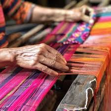
Textile ArtThe Manobo and Banwaon peoples create intricate abaca woven textiles with geometric patterns that encode clan identity, social status, and spiritual beliefs passed through generations. Each piece can take weeks to complete.
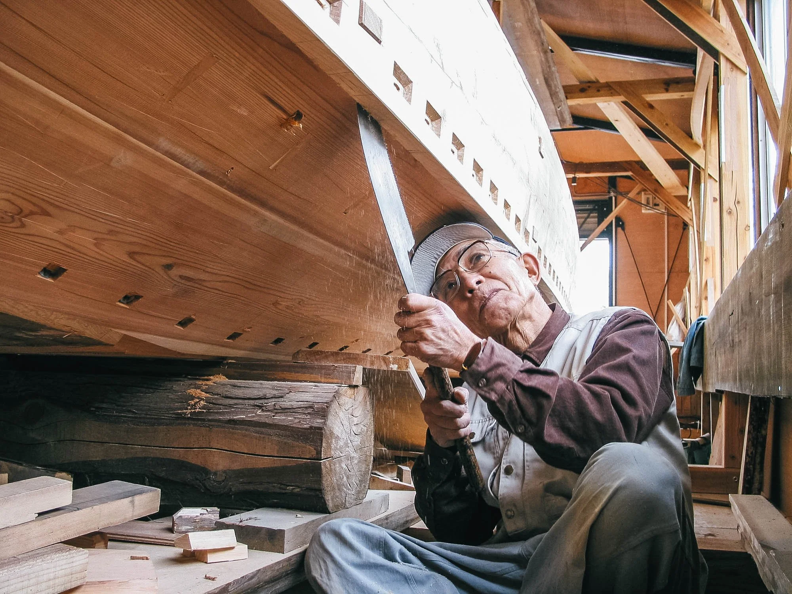
Maritime HeritageThe ancient art of building plank-sewn watercraft stretches back over 1,700 years in Butuan. Modern craftsmen still build traditional bancas using techniques descended from the Balanghai seafarers — cultural heritage declared a National Treasure.
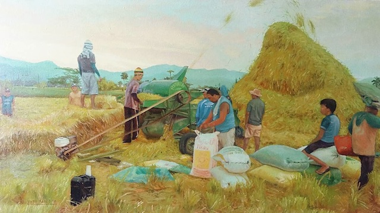
Gold & MetalworkOver 1,500 gold artefacts have been recovered from Butuan's pre-colonial sites — among them golden masks, kinnari figurines, and intricately worked jewellery dating to the 9th–11th centuries. This goldsmithing tradition reflects one of Southeast Asia's most sophisticated ancient civilisations.
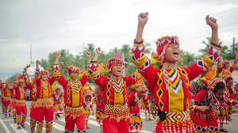
Performing ArtsFrom the Manobo kaamulan ritual dances to the Surigaonon maritime celebration dances, Caraga's indigenous peoples maintain a rich tradition of ceremonial movement. Many dances re-enact creation myths, harvests, and sea voyages passed down through oral tradition.
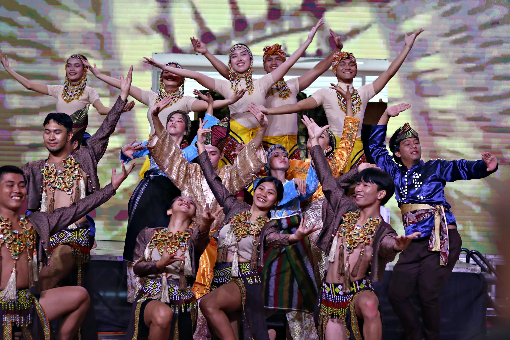
MusicThe kubing (bamboo jaw harp), gimbal (drum), and kulintang (gong ensemble) are central to Caraga's musical heritage. These instruments accompany ritual ceremonies, courtship, and community celebrations — their sounds echoing traditions centuries old and still very much alive today.
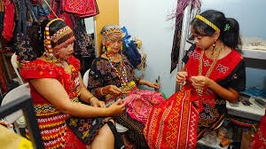
CraftsmanshipCaraga's artisans are renowned for their expertise in bamboo and rattan craft — from functional household items to elaborate decorative pieces. The Agusan del Sur highlands are especially rich in skilled weavers producing baskets, mats, and furniture that are sold across the Philippines and internationally.